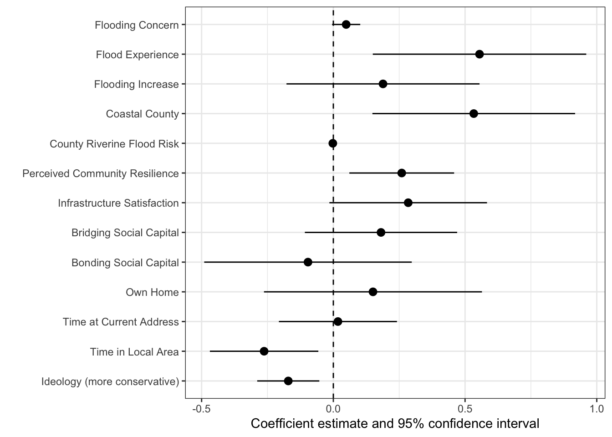

| Variable | Mean | SD | Min | Max |
|---|---|---|---|---|
| N = 407. For binary variables, the mean column reports the percent coded 1. | ||||
| Continuous and ordinal variables | Continuous and ordinal variables | Continuous and ordinal variables | Continuous and ordinal variables | Continuous and ordinal variables |
| Support for Buyout Program | 4.21 | 1.86 | 1.00 | 7.00 |
| Flooding Concern | 5.36 | 3.26 | 0.00 | 10.00 |
| Flooding Increase | 1.98 | 0.58 | 1.00 | 3.00 |
| Perceived Community Resilience | 4.59 | 1.39 | 1.00 | 7.00 |
| Infrastructure Satisfaction | 3.49 | 0.84 | 1.00 | 5.00 |
| Bridging Social Capital | 2.52 | 0.73 | 1.00 | 5.00 |
| County Riverine Flood Risk | 61.29 | 24.33 | 4.80 | 94.59 |
| Bonding Social Capital | 2.66 | 0.67 | 1.00 | 5.00 |
| Time at Current Address | 2.81 | 1.03 | 1.00 | 4.00 |
| Time in Local Area | 3.12 | 1.02 | 1.00 | 4.00 |
| Ideology (more conservative) | 4.25 | 1.67 | 1.00 | 7.00 |
| Age | 48.72 | 17.75 | 18.00 | 88.00 |
| Education | 4.28 | 1.83 | 1.00 | 7.00 |
| Income | 3.38 | 1.80 | 1.00 | 7.00 |
| Binary variables | Binary variables | Binary variables | Binary variables | Binary variables |
| Flood Experience | 34.2% | |||
| Coastal County | 27.0% | |||
| Own Home | 70.8% | |||
| Gender (male=1) | 51.8% | |||
| Race (white=1) | 70.0% | |||
Who Supports Managed Retreat? Flood Experience, Local Government Performance, and Public Opinion on Property Buyouts
Abstract: Property buyout programs, in which governments purchase flood-prone homes and return the land to open space, are the primary tool of managed retreat in the United States. Yet little is known about how the general public views these programs. In this paper, we draw on an original 2023 survey of South Carolina residents to examine support for a property buyout program. We test competing expectations about the role of evaluations of the local community. Positive evaluations may reduce support by strengthening attachment to place, or they may increase support by signaling that local government is capable of managing a buyout program. We find that flood experience and living in a coastal county are associated with greater support, while political conservatism and longer residence in the local area are associated with less support. Additionally, perceptions of community resilience to disasters and satisfaction with local infrastructure are associated with greater support, which is consistent with a local government performance explanation rather than an attachment explanation. Neither bonding nor bridging social capital is significantly associated with support once evaluations of the community are taken into account.
Introduction
Climate change is likely to intensify natural hazards such as flooding, hurricanes, and sea-level rise, and communities are increasingly considering how to reduce the exposure of residents and infrastructure to these hazards (Dundon and Abkowitz 2021). One set of strategies involves managed retreat, the purposeful relocation of people and infrastructure from high-risk to lower-risk areas (Hino, Field, and Mach 2017; Siders 2019a). In the United States, property buyout programs are the primary tool of managed retreat (Greer and Binder 2017). In a buyout program, governments purchase flood-prone private property from willing sellers, demolish the structures, and return the land to open space. More than 40,000 properties have been acquired through federally funded buyouts, and the use of buyouts is expected to grow as flood risks increase (Greer, Binder, and Zavar 2022; Mach et al. 2019).
A substantial body of research has examined the implementation, cost-effectiveness, and equity of buyout programs (Elliott, Brown, and Loughran 2020; Shi et al. 2022; Siders 2019b; Tate et al. 2016). Additionally, research on public views of buyouts has focused largely on homeowners facing a buyout offer and the factors that shape their decision to accept (Ando and Reeser 2022; Hotard and Ross 2025; Seebauer and Winkler 2020). Much less is known about how the general public views buyout programs as a policy. Public views are likely to matter, as buyouts rely on public funding, local political support, and voluntary participation, all of which depend in part on the social acceptability of the program (Bohnert and Doberstein 2021). Yet, the few studies of general public opinion toward buyouts have been conducted largely outside the United States (Bendz, Göransson, and Van Well 2025; Raikes, Henstra, and Thistlethwaite 2023) or have examined managed retreat in the abstract rather than buyout programs specifically (Freihardt, Buntaine, and Bernauer 2024; MISSING-mah2024publicpreferences?).
In this paper, we use an original survey of South Carolina residents to examine public opinion on property buyout programs. The state of South Carolina experienced a series of hurricane-related major flood events in recent years, including Joaquin (2015), Matthew (2016), and Florence (2018), yet managed retreat strategies have not been widespread across South Carolina (Siders 2019a). South Carolina’s Office of Resilience (SCOR), created in 2020, has established a statewide buyout program. SCOR’s buyout program is voluntary and allows communities to relocate citizens living in floodplains and return the land to green spaces that can capture floodwater through retention ponds, stormwater parks, or other methods.7
We examine support for a property buyout program as a function of flood perceptions and experience, evaluations of the local community, social capital, attachment to place, and political ideology. We make three contributions. First, we provide evidence on general public support for buyouts in a U.S. state that has recently established a statewide buyout program. Second, we distinguish between bonding and bridging social capital, which prior work suggests may relate differently to views on buyouts and relocation (Hotard and Ross 2025). Third, we posit and test competing hypotheses about the role of community evaluations. Positive views of one’s community may reduce support for buyouts by strengthening attachment to place, or they may increase support by signaling that local government is capable of managing a buyout program.
Overall, we find that flood experience and living in a coastal county are associated with increased support for a buyout program, while political conservatism and longer residence in the local area are associated with decreased support. Additionally, perceptions of community resilience and satisfaction with local infrastructure are associated with increased support, which is consistent with the local government performance hypotheses rather than the community attachment hypotheses. However, neither bonding nor bridging social capital is significantly associated with support once evaluations of the community are taken into account. In the next section, we discuss managed retreat and property buyout programs in the United States.
Managed Retreat and Property Buyout Programs in the United States
Managed retreat refers to the purposeful movement of people, buildings, and infrastructure away from areas exposed to hazards such as flooding, sea-level rise, and shoreline erosion (Siders 2019a). As these hazards intensify, some residents of high-risk areas are likely to relocate whether or not governments act, and predicting these decisions is difficult due to many factors, including mobility, capacity to adapt to changing environmental conditions, and individual tolerance for risk (Adams and Kay 2019). Managed retreat policies aim to make such relocation more orderly and less costly for residents and governments.
Retreat policies facilitate the relocation of residents, businesses, and infrastructure toward more inland communities, and sometimes include compensation for landowners through buyouts (Bongarts Lebbe et al. 2021). Retreat policies can include relocating infrastructure, such as public roads and water treatment facilities, to more inland locations that are less threatened by rising seas or out of flood zones. For residents, local governments can purchase land and development rights through fee-simple acquisition from landowners and use them to remove infrastructure, potentially allowing the salt marshes on the coast to migrate landward. Another form of managed retreat includes buyout programs that target flood-prone areas for property acquisition and the removal of infrastructure to create open space and prohibit or restrict future development. Funding for property buyouts comes from the Federal Emergency Management Agency (FEMA), with additional funding available from the Department of Housing and Urban Development (HUD) (Mach et al. 2019; Pew Research Center 2022). Additionally, states are expected to provide some additional or matching funding.
Overall, property buyouts are gaining popularity among floodplain managers, who generally consider them an effective way to reduce the risk of repeated exposure to natural hazards (Greer, Binder, and Zavar 2022). Additionally, they are seen as cost-effective (Manda, Jerolleman, and Marino 2023; Nelson and Camp 2020). Yet, there are some concerns. For example, obtaining funding can be an arduous process, funding sources can be opaque, and state and local governments often have difficulty meeting their funding requirements (Curran-Groome et al. 2021, 2022; Peterson et al. 2020). There are also equity and social justice concerns (Shi et al. 2022; Siders 2019b), as programs tend to focus on “whiter” communities rather than communities of color (Elliott, Brown, and Loughran 2020). Finally, participants may be relocated to another vulnerable area (McGhee, Binder, and Albright 2020).
In South Carolina, managed retreat strategies have not been widespread (Siders 2019a). Yet South Carolina’s Office of Resilience (SCOR) has created a buyout program, demonstrating that such programs will likely become more common in the state in the future. SCOR’s buyout program is voluntary, and communities relocate citizens and return the land to green spaces, which can be used to capture floodwater. The program has received funding from the U.S. Department of Housing and Urban Development (HUD) for parts of the state most heavily impacted by presidentially declared disasters in 2015, 2016, and 2018, and offers resources to facilitate the relocation of residents (“Interview with the Mitigation Buyout Program Manager for South Carolina’s Office of Resilience (SCOR)” 2024).
As of February 2024, a total of six localities in the state of South Carolina have begun the process of SCOR’s voluntary buyout program, with four of those project areas (City of Bennettsville, Darlington County, Town of Nichols, and Dillon County) currently going through the environmental assessment portion, and two project sites (Horry County and Town of Cheraw) where most homes in the project area have already been purchased with the HUD funds (“Interview with the Mitigation Buyout Program Manager for South Carolina’s Office of Resilience (SCOR)” 2024). In Horry County, the voluntary buyout program was successful, and 45 of 50 homeowners who received purchase offers have completed the sale. A buyout project in the City of Mullins in Marion County, South Carolina, did not go forward due to a lack of homeowner participation, and generational homeowners and residents expressed concerns over losing ownership of their land (“Interview with the Mitigation Buyout Program Manager for South Carolina’s Office of Resilience (SCOR)” 2024), demonstrating that length of residency and cultural connections might influence a resident’s willingness to accept a buyout.
Recent work examined the buyout program in the City of Bennettsville, South Carolina, a small, rural county where about 60% of residents are Black (Mukherji, Williamson, et al. 2024). The city applied to SCOR’s buyout program in 2021 following major flooding from Hurricanes Matthew in 2016 and Florence in 2018. Researchers interviewed 10 individuals, including city and county elected officials, and several community leaders. Mukherji, Williamson, et al. (2024) found that,
local leaders acknowledge that the buyout program can address safety issues faced by residents of the buyout area, but also express concerns about historical racial biases, distrust in government, concerns about lack of alternative housing availability, and disagreements over the compensation offer amounts (112).
These findings underscore the importance of understanding public opinion on property buyout programs. As South Carolina and other states continue to develop managed retreat and property buyout programs, understanding the views of the community will be vital to developing communication that helps ensure trust and understanding of the program on the part of the public. In the next section, we discuss research on public views of buyout programs.
Public Views of Buyout Programs
To effectively plan and develop buyout programs, it is important to understand how the public views these approaches and the factors that shape those views. Thus far, only a few studies have examined general public opinion about property buyouts. In a national survey of Canadians living in high-risk flood areas, Raikes, Henstra, and Thistlethwaite (2023) found broad support for buyout programs, with acceptability highest when participation was voluntary, pricing was flexible, and program design and implementation were transparent. In the United States, (MISSING-mah2024publicpreferences?) found that Americans supported adaptation to sea-level rise in general, and that support for managed retreat specifically was predicted by political ideology, climate change concern, and beliefs about eminent domain. However, support for retreat tends to lag behind support for other adaptation strategies. In a systematic review, (MISSING-mallette2021coastalpreferences?) found that retreat options were the least preferred approach to coastal adaptation, often due to strong place attachment, and Freihardt, Buntaine, and Bernauer (2024) found strong public support in the United States and Germany for funding protective infrastructure over relocation. Additionally, examining residents of Sweden, Bendz, Göransson, and Van Well (2025) found that support for relocating buildings and infrastructure was more likely when flooding was hypothetically expected to occur once a year rather than once every 10 or 50 years. Research on climate adaptation policy more broadly finds that risk perceptions, the perceived efficacy of government, and political affiliation shape support for local adaptation policy (Harris and Howe 2023; “Public Support for Local Adaptation Policy: The Role of Social-Psychological Factors, Perceived Climatic Stimuli, and Social Structural Characteristics” n.d.).
Flood risk perceptions and direct experience with flooding are among the most consistent predictors of views on buyouts and relocation. Using a survey of Gulf Coast residents, (MISSING-shao2017sequentialmodel?) found that risk perceptions mediated the relationship between objective flood risk and support for incentives for relocation. Similarly, households are more likely to consider relocation and participation in a buyout program when they have experienced a flood and/or perceived flood risk to be high (Ando and Reeser 2022; Bendz, Göransson, and Van Well 2025; Hotard and Ross 2025; Sansom et al. 2025; Seebauer and Winkler 2020). Flood experience may also lessen the influence of other factors, as Cain, Gerber, and Hui (2020) found that experience with extreme events narrowed the partisan gap in support for sea-level rise adaptation.
One of the major pull factors that keeps residents in place is place attachment, as residents who feel more attached to their homes and their community are less likely to relocate (Mukherji, Adeniji, et al. 2024; Seebauer and Winkler 2020; Swapan and Sadeque 2021). One important factor in place attachment is social capital (Binder et al. 2023). Social capital, the value that is generated through personal relationships and organizations in a community, has long been noted to play a role in disaster mitigation, resilience, and adaptation (Adger 2003; Aldrich 2012; Collins, Ersing, and Polen 2017; Islam and Walkerden 2014; Monteil, Simmons, and Hicks 2019; Nowlin and Wehde 2021). There are two types of social capital that are particularly important, bonding and bridging. Bonding social capital refers to the ties individuals have to others in their community, such as friends, neighbors, co-workers, and family. Bridging social capital involves the organizations in one’s community that can provide individuals with resources. Regarding social capital in the context of property buyouts, Hotard and Ross (2025) examined the acceptance of a buyout and willingness to relocate as separate questions. They found that bonding social capital made accepting a buyout significantly more likely, and relocating less likely. Additionally, they found that bridging social capital reduced the likelihood of relocating (Hotard and Ross 2025).
Few studies have examined the relationship between social capital and general public support for retreat policies. In one exception, (MISSING-jones2014romneymarsh?) found that social trust, institutional trust, social networks, and reciprocity influenced the perceived costs and benefits of managed realignment and, in turn, its public acceptability among residents of a coastal community in the United Kingdom. However, (MISSING-mah2024publicpreferences?) found that framing a community as having high or low social capital had little effect on support for managed retreat. Additionally, de Vries and Fraser (2012) found that participants in several buyout programs across North Carolina, North Dakota, and Texas perceived the program as less voluntary than those who did not participate, and that low social capital among flood victims allowed buyouts to be expedited after disasters.
Finally, buyouts are government programs, and views of buyouts are likely shaped by evaluations of the governments that administer them. Policy design and implementation factors influence support for and participation in buyouts, including that the program is voluntary and transparent, and that individuals trust those administering the program (Mukherji, Adeniji, et al. 2024; Raikes, Henstra, and Thistlethwaite 2023; Siders 2019b). Post-disaster buyout processes can degrade public trust in government (Schwaller et al. 2022), and in South Carolina and North Carolina, state-led implementation of buyouts led to extended delays, confusion, and a lack of trust in government (Mukherji, Williamson, et al. 2024). Conversely, trust in institutions consistently predicts support for managed realignment (MISSING-bax2025emotionstrust?), and the perceived efficacy of local government is a key driver of support for local adaptation policy (Harris and Howe 2023; “Public Support for Local Adaptation Policy: The Role of Social-Psychological Factors, Perceived Climatic Stimuli, and Social Structural Characteristics” n.d.). Political beliefs are also likely to matter, as conservatives tend to place more responsibility for disaster preparedness on individuals and households rather than governments (Wehde and Nowlin 2021). However, the evidence on political beliefs and buyouts is mixed, as Hotard and Ross (2025) found political beliefs were not a significant factor regarding buyout programs.
These expectations also draw on broader research on trust in government and public opinion. Political trust shapes support for government programs, particularly programs that ask individuals to accept costs or risks, and the effect of trust is often strongest among conservatives (Hetherington 2005; Rudolph and Evans 2005). Additionally, the relationship between political trust and environmental policy attitudes depends on the geographic scale of the issue (Konisky, Milyo, and Richardson 2008), which suggests that evaluations of local government are likely to be particularly relevant for local programs such as buyouts. Research on policy feedback also finds that experiences with government programs and services shape attitudes toward government and its policies (Mettler and SoRelle 2018). As such, evaluations of existing local services may inform views of new programs. Finally, buyouts are a place-based policy in which costs are concentrated on particular neighborhoods, and research on local opposition to land use decisions identifies attachment to place and distrust of decision-makers as central sources of opposition (Schively 2007). Thus, views on buyouts are likely shaped both by attachment to place and by evaluations of the governments that administer them.
Hypotheses
Based on the literature, we derive several hypotheses regarding support for a property buyout program. We group the hypotheses into three elements, including flooding, community factors, and individual factors. For the community factors, we posit competing hypotheses, as evaluations of the local community may plausibly either increase or decrease support for buyouts.
Flooding
For flooding, we expect perceptions of flood risk, experience with flooding, and place-based risk to increase support for a property buyout program. Specifically, we examine concern about flooding, perceptions that flooding has increased, flood experience, and whether respondents live in a coastal county.
H1a: As concern about flooding increases, so does support for a property buyout program
H1b: Those who perceive flooding in their area to have increased will be more likely than others to support a property buyout program
H1c: Those who have experienced a flood will be more likely than others to support a property buyout program
H1d: Those who live in a coastal county will be more likely than others to support a property buyout program
Community Factors
We examine three evaluations of the local community, including perceptions of the community’s resilience to disasters, satisfaction with local government services and infrastructure, and bridging social capital. As noted, prior work offers two plausible but competing expectations for how these factors relate to support for buyouts.
The first is a community attachment expectation. Residents who view their community as resilient, who are satisfied with local services, and who are connected to local organizations likely have more reasons to remain in place. As such, these residents are likely to view buyouts, which require participants to relocate, less favorably (Mukherji, Adeniji, et al. 2024; Seebauer and Winkler 2020).
H2a: As perceptions of community resilience increase, support for a property buyout program decreases
H2b: As satisfaction with infrastructure increases, support for a property buyout program decreases
H2c: As bridging social capital increases, support for a property buyout program decreases
The second is a local government performance expectation. The success of buyout programs depends on the capacity of governments to administer them transparently and effectively (Mukherji, Williamson, et al. 2024; Siders 2019b). Perceptions of community resilience and satisfaction with local services are, in large part, evaluations of how well local governments perform. Residents who view their local government as capable are likely to trust that a buyout program will be well managed, which in turn is likely to increase support (Harris and Howe 2023; “Public Support for Local Adaptation Policy: The Role of Social-Psychological Factors, Perceived Climatic Stimuli, and Social Structural Characteristics” n.d.). Similarly, bridging social capital provides access to organizations that can supply information and resources (Aldrich 2012), which may make residents more confident that a buyout program could be navigated successfully.
H3a: As perceptions of community resilience increase, support for a property buyout program increases
H3b: As satisfaction with infrastructure increases, support for a property buyout program increases
H3c: As bridging social capital increases, support for a property buyout program increases
Individual Factors
Several individual factors are also likely to influence support for property buyouts, including bonding social capital, place attachment through homeownership and length of residence, and political beliefs. Bonding social capital is likely to be a pull factor, keeping residents in place. For the place attachment factors, home ownership may act as a push because homeowners can benefit from a property buyout, whereas time at their current residence and time in the local area may act as a pull. Finally, since buyout programs are a government program, political beliefs may influence views.
H4a: As bonding social capital increases, support for a property buyout program decreases
H4b: Homeowners are more likely than others to support a property buyout program
H4c: As time at current residence and time in the local area increase, support for a property buyout program decreases
H4d: As political conservatism increases, support for a property buyout program decreases
In the next section, we describe the data and measures used to test these hypotheses.
Data and Measures
The data used to test our hypotheses come from a statewide survey of South Carolina residents administered in November-December 2023. The surveys were given in Qualtrics, and respondents were recruited through Cloud Research (https://www.cloudresearch.com) using a quota-based sample matched to the age, gender, and race distributions of South Carolina residents from the US Census. Of the 558 survey records, we excluded 1 record flagged as spam by Qualtrics and 86 respondents who did not provide a ZIP code. We matched each respondent’s ZIP code to a county using the HUD-USPS ZIP crosswalk, and assigned ZIP codes that span multiple counties to the county with the largest share of residential addresses. The analytic sample includes the 407 respondents with complete data on all model variables. The full sample accounting is presented in Table S1 in the supplemental materials.8 Respondents had a median completion time of 11.7 minutes. As a check on data quality, we re-estimated our models excluding the 13 respondents who completed the survey in less than one-third of the median time, and the results are similar.
Because the quota sample was matched only on age, gender, and race, we also constructed post-stratification weights by raking the sample to 2024 American Community Survey estimates for South Carolina adults on sex, age, race, and education. A comparison of the sample to these benchmarks is presented in Table S2 in the supplemental materials. Our main results are unweighted, and they are robust to the use of weights. The sample also leans Republican, with 41% of respondents identifying as Republicans and 28% identifying as Democrats.
Our dependent variable is support for a property buyout program in South Carolina. To measure support for a property buyout program, respondents were given some basic information about the buyout program and were then asked their support on a 1 (strongly oppose) to 7 (strongly support) scale. The question was asked of all respondents before the flood days experiment described in the supplemental materials.
Property buyouts are a policy for reducing risk to people and communities from severe storms, flooding, wildfires, and other extreme events. Buyouts also reduce costs to homeowners, insurance companies, and the government for rebuilding after events. In a buyout program, the government purchases private properties including homes and businesses that are damaged or at risk. Participating property owners must then relocate.
On a scale from 1 to 7, with 1 being strongly oppose and 7 being strongly support, please indicate your support for a property buyout program in South Carolina. In this program the federal government would purchase homes and businesses in South Carolina that have been damaged or at risk from natural disasters and the owners would need to move.
Two features of this question are important for interpreting the results. First, the question asked about a program in which the federal government would purchase properties. Although SCOR administers South Carolina’s buyout program, the program is funded largely by HUD (“Interview with the Mitigation Buyout Program Manager for South Carolina’s Office of Resilience (SCOR)” 2024), and most buyouts in the United States rely on federal funds (Mach et al. 2019). As such, the measure captures support for a federally funded buyout program in South Carolina rather than a program funded solely by the state. This is likely to matter for the relationship between political ideology and support, as conservatives tend to be more skeptical of federal government action. Second, the introduction to the question described several benefits of buyouts, which likely increased reported support. The mean on the 1 to 7 scale was 4.19 (4.18 weighted). Given the framing of the question, we focus on the factors associated with variation in support rather than on the overall level of support.
Our independent variables include respondents’ concern about and experience with flooding, their social capital, their perceptions of their local community, their length of residence, political ideology, whether they own or rent their home, and several demographic factors, including age, gender, race, education, and income.9
Flood Perceptions and Risk: For flood perceptions, we asked respondents how concerned they are about flooding in their local area, on a 0 (not at all concerned) to 10 (extremely concerned) scale. Next, we asked respondents if they perceived flooding in their area to have been less frequent, stayed the same, or more frequent in recent years. Responses were coded so that a 1=less frequent, 2=stayed the same, and 3=more frequent. We also asked respondents if they had ever experienced a flood, with 1 if they had and 0 if they had not. Overall, 34% of the analytic sample have experienced a flood. To measure place-based risk, we coded whether respondents live in one of South Carolina’s eight coastal counties (Beaufort, Berkeley, Charleston, Colleton, Dorchester, Georgetown, Horry, and Jasper) based on the county matched to their ZIP code. Overall, 27% of the analytic sample live in a coastal county.10 Finally, as a control for objective flood risk, we include the riverine flooding risk score for the respondent’s county from FEMA’s National Risk Index, which ranges from 0 to 100.11
Social Capital: To measure bonding social capital, we asked respondents about the number of friends they have in their local community, the number of old classmates with whom they are still in touch, the number of relatives and coworkers they trust, the number of relatives and coworkers that would definitely help them upon request, how many friends, relatives, classmates, and coworkers in their local community have broad connections to others, and how many close contacts have a professional job. Responses were on a 1 (A few/none) to 5 (A lot/All) scale. We averaged responses into a single 1 to 5 scale, which has a mean of 2.66 and a Cronbach’s \(\alpha\) of 0.79. The bonding measure combines items on the number of close ties, trust, and the resources held by close contacts, and so it captures both the extent and the resources of an individual’s personal network.
For bridging social capital, we asked respondents about the groups and organizations in their community, including the overall number, the number of groups with broad social connections, social influence, that represent the respondent’s interest, and would help the respondent upon request. Similar to the bonding social capital measure, we averaged responses into a 1 to 5 scale, with a mean of 2.52 and a Cronbach’s \(\alpha\) of 0.87. An exploratory factor analysis of the 16 social capital items supports the distinction between bonding and bridging social capital, as most items load on separate factors, which are correlated at r = 0.56. However, two bonding items, the number of friends and the number of old classmates in the local community, load weakly on the bonding factor (see Table S6 in the supplemental materials).
Community Resilience: We asked respondents about their perceptions of their community’s resilience to disasters. Specifically, respondents were asked to rate their agreement, on a 1 (strongly disagree) to 7 (strongly agree) scale, with statements that their community tries to prevent disasters, prepares for future disasters, provides emergency services during a disaster, and has services and programs to help people after a disaster. We averaged the responses to the four statements into a single 1 to 7 scale. The scale has a mean of 4.59 and an \(\alpha\) of 0.89.
Infrastructure Satisfaction: To measure how satisfied respondents are with the physical infrastructure in their community, we asked respondents, on a 1 (very dissatisfied) to 5 (very satisfied) scale, how satisfied they are with their local government, drinking water services, condition of roads and streets, and their sewer/septic system. We averaged the responses into a single 1 to 5 scale, which had a mean of 3.49 and an \(\alpha\) of 0.69.
Place Attachment: We measure place attachment with homeownership (Own=1, Else=0), how long respondents have lived at their current address, and how long they have lived in the local area, defined as within about 25 miles of their current residence. Both length of residence measures range from 1 (less than a year) to 4 (11+ years).12
We also asked respondents their political ideology on a 1 (very liberal) to 7 (very conservative) scale, as well as several demographic factors, including age, gender (Male=1, Else=0), race (White=1, Else=0), level of education (1=less than high school to 7=graduate/professional degree), and level of income (1=0-19999 to 7=150000 or more). The descriptive statistics are presented in Table 1. In the next section, we present the results.
Results
We used OLS regression to test our hypotheses for support of a property buyout program. Because respondents are nested within counties and the models include county-level measures, we report standard errors clustered by county. We estimated four models on a common sample, including a model with the flooding variables, models that separately add the community and individual factors, and a full model with all variables. All models include the demographic controls. The results are shown in Table 2, and the estimates from the full model are shown in Figure 1.
| Flooding | Community | Individual | Full | |
|---|---|---|---|---|
| County-clustered standard errors in parentheses. | ||||
| Flooding Concern | 0.103** (0.032) | 0.061* (0.030) | 0.083** (0.029) | 0.049+ (0.027) |
| Flood Experience | 0.665*** (0.195) | 0.641** (0.212) | 0.579** (0.202) | 0.555** (0.206) |
| Flooding Increase | 0.096 (0.146) | 0.151 (0.167) | 0.134 (0.151) | 0.189 (0.186) |
| Coastal County | 0.573** (0.199) | 0.533** (0.196) | ||
| County Riverine Flood Risk | -0.001 (0.004) | -0.002 (0.003) | ||
| Perceived Community Resilience | 0.230* (0.101) | 0.260* (0.101) | ||
| Infrastructure Satisfaction | 0.317* (0.131) | 0.284+ (0.152) | ||
| Bridging Social Capital | 0.075 (0.137) | 0.181 (0.147) | ||
| Bonding Social Capital | 0.278 (0.176) | -0.096 (0.200) | ||
| Own Home | 0.197 (0.196) | 0.150 (0.210) | ||
| Time at Current Address | 0.028 (0.120) | 0.017 (0.114) | ||
| Time in Local Area | -0.235+ (0.122) | -0.263* (0.105) | ||
| Ideology (more conservative) | -0.181** (0.064) | -0.171** (0.060) | ||
| Age | -0.007 (0.005) | -0.009+ (0.005) | -0.002 (0.005) | -0.004 (0.005) |
| Gender (male=1) | 0.449* (0.193) | 0.289 (0.198) | 0.375+ (0.203) | 0.267 (0.207) |
| Race (white=1) | 0.197 (0.251) | 0.164 (0.209) | 0.350 (0.282) | 0.348 (0.238) |
| Education | 0.077 (0.059) | 0.064 (0.050) | 0.051 (0.065) | 0.063 (0.060) |
| Income | -0.046 (0.053) | -0.113* (0.052) | -0.077 (0.056) | -0.111* (0.056) |
| Constant | 3.040*** (0.369) | 1.183+ (0.639) | 3.559*** (0.551) | 2.272** (0.818) |
| N | 407 | 407 | 407 | 407 |
| R2 | 0.11 | 0.20 | 0.15 | 0.24 |

Looking first to the flooding variables, we see that, as expected, respondents who have experienced a flood are more likely than those who haven’t to support property buyouts (b = 0.55, p = 0.007). As concern about flooding increases, so does support for a property buyout program, though the relationship is only marginally significant in the full model (b = 0.05, p = 0.074) and is significant in the flooding, community, and individual models. Also as expected, those who live in a coastal county were more likely to support a buyout program (b = 0.53, p = 0.007). However, there was no relationship between buyout support and a perceived increase in flooding or the riverine flood risk of the respondent’s county. Thus, H1a, H1c, and H1d are supported, while H1b is not.
For the community factors, the results are consistent with the local government performance hypotheses rather than the community attachment hypotheses. As shown in Table 2, increases in perceived community resilience are associated with increased support for property buyouts (b = 0.26, p = 0.011), supporting H3a. Similarly, increased satisfaction with infrastructure is associated with increased support, which is significant in the community model and marginally significant in the full model (b = 0.28, p = 0.063), providing support for H3b. Bridging social capital is not significantly related to support in either the community or full model, and so neither H2c nor H3c is supported.
For the individual factors, as expected, increasing conservatism is associated with decreasing support for buyouts (b = -0.17, p = 0.005), supporting H4d. Respondents who have lived in the local area for longer were less supportive of buyouts (b = -0.26, p = 0.012), but time at their current address was not significantly related to support once time in the area was taken into account. Thus, H4c is partially supported. Contrary to expectations, bonding social capital was not significantly related to support, and there was no difference in support between homeowners and others. Finally, for demographics, income was associated with decreased support (b = -0.11, p = 0.049), but no other demographic variables were significant.
To illustrate the size of these relationships, Table 3 presents the change in predicted support associated with each of the key variables. Having experienced a flood and living in a coastal county are each associated with an increase of about half a point on the 7-point support scale. A two standard deviation increase in perceived community resilience is associated with an increase of 0.72, while two standard deviation increases in time in the local area and conservatism are associated with decreases of 0.53 and 0.57, respectively.
| Variable | Change | Effect | 95% CI |
|---|---|---|---|
| Change in predicted support on the 1-7 scale for a change from 0 to 1 (binary variables) or a two standard deviation increase (other variables), holding other variables constant. Confidence intervals use county-clustered standard errors. | |||
| Flood Experience | 0 to 1 | 0.55 | [0.15, 0.96] |
| Coastal County | 0 to 1 | 0.53 | [0.15, 0.92] |
| Flooding Concern | +2 SD (6.5 units) | 0.32 | [-0.03, 0.66] |
| Perceived Community Resilience | +2 SD (2.8 units) | 0.72 | [0.17, 1.27] |
| Infrastructure Satisfaction | +2 SD (1.7 units) | 0.48 | [-0.02, 0.98] |
| Time in Local Area | +2 SD (2.0 units) | -0.53 | [-0.95, -0.12] |
| Ideology (more conservative) | +2 SD (3.3 units) | -0.57 | [-0.97, -0.18] |
We conducted several robustness checks, which are presented in Table S4 in the supplemental materials. The results are similar when using the post-stratification weights, when using an ordered logit model, and when using the self-reported coastal county measure. Additionally, because perceived community resilience, infrastructure satisfaction, and bridging social capital are moderately correlated (see Table S3 in the supplemental materials), we entered each measure separately. Perceived community resilience and infrastructure satisfaction are each significantly associated with increased support when entered alone. Bridging social capital is also significantly associated with increased support when entered without the other community measures (b = 0.47), which suggests that its relationship with support overlaps with perceptions of community resilience. All variance inflation factors in the full model are below 2.4.
We also examined alternative measures of flood experience and exposure, which are presented in Table S5 in the supplemental materials. When flood experience is separated by recency, respondents whose most recent flood occurred within roughly the last five years are much more supportive of buyouts than those who have never experienced a flood (b = 1.15), while those whose most recent flood occurred longer ago do not differ from those who have never experienced a flood. Neither a dummy variable for a perceived increase in flooding nor measures of how often flooding disrupted daily activities or compromised safety in the past year were significantly related to support. Finally, the results are similar when excluding respondents who completed the survey quickly.
Discussion
Property buyout programs are increasingly seen as an important tool to reduce the risks of flooding and other climate change-induced disasters. Yet there is still more to learn about how the public views property buyout programs. In this paper, we drew on a quota-based sample of residents of South Carolina to examine views of buyout programs. We posited and tested several hypotheses regarding the role of flood perceptions, community factors, and individual factors in shaping support for buyout programs, including competing hypotheses regarding evaluations of the local community.
Perceptions and experiences of flooding risk are among the leading factors shaping views of buyout programs. We found, as expected, that those who have experienced a flood were more likely than those who haven’t to support buyouts, and that support increased with concern about flooding. Additionally, those living in a coastal county were more supportive of buyouts, even when controlling for the objective riverine flood risk of their county. These findings are consistent with previous research, which indicates the strong push effect of flooding risk (Hotard and Ross 2025; Seebauer and Winkler 2020; MISSING-shao2017sequentialmodel?). Notably, the relationship between flood experience and support is driven by recent floods, which suggests that the effect of flood experience on views of buyouts fades over time. The coastal county finding is likely because coastal flood risks, including sea-level rise and storm surge, are highly salient for coastal residents.
Perhaps the most interesting findings are those related to the community factors. We found that increased perceptions of community resilience and increased satisfaction with physical infrastructure were associated with increased support for a property buyout program. These findings are consistent with the local government performance hypotheses. This is likely because respondents who view their local government and services favorably assume that a property buyout program will be managed effectively. These results align with research finding that trust in institutions and the perceived efficacy of government are important drivers of support for adaptation policy (Harris and Howe 2023; “Public Support for Local Adaptation Policy: The Role of Social-Psychological Factors, Perceived Climatic Stimuli, and Social Structural Characteristics” n.d.; MISSING-bax2025emotionstrust?). At the same time, we found evidence of an attachment effect, as those who have lived in the local area longer were less supportive of buyouts. Taken together, these findings suggest that community attachment operates through length of residence rather than through positive evaluations of the community. An alternative explanation is that respondents may assume that buyout programs allow participants to stay in their community. Relatedly, previous research found a disconnect regarding property buyout programs and the need for participants to relocate (Hotard and Ross 2025).
For social capital, our expectations were not met. Neither bonding nor bridging social capital was significantly associated with support for buyouts once evaluations of the community were taken into account. Bridging social capital was associated with increased support when entered on its own, but this relationship overlaps with perceptions of community resilience, which is likely because residents who are connected to local organizations also view their community as better prepared for disasters. These results differ from those of Hotard and Ross (2025), who found that social capital was related to the acceptance of a buyout and the willingness to relocate. One reason for the difference may be that we examine general support for a buyout program rather than an individual’s decision to participate. Social capital is likely more relevant to whether an individual would leave their community than to whether they support a program that is available to others.
Finally, political conservatism was associated with less support for buyouts, as expected. This is likely because conservatives may not think that the government could effectively manage a buyout program or that such programs are not something in which governments should engage. However, as noted, our question referenced the federal government purchasing properties, and so the relationship between ideology and support may partly reflect views about federal involvement rather than buyouts per se.
There are several limitations to this study. First, our data come from a non-probability quota sample, and although the results are robust to post-stratification weights, the sample may not represent the views of South Carolina residents on other characteristics, such as partisanship. Second, our data are cross-sectional, and so we cannot make causal claims about the relationship between community evaluations and support. Third, the question used to measure support described the benefits of buyouts, which likely inflated the overall level of support. Additionally, our measure of objective flood risk is at the county level, which is likely too coarse to capture the flood risk faced by individual respondents. Finally, our hypotheses were not preregistered, and the competing community hypotheses were developed in part in response to earlier analyses of these data, and so they should be tested with new data.
Future research should try to replicate these results, perhaps at the national level, and with question wording that presents both the benefits and costs of buyouts. Additionally, future research should more directly measure trust in the governments that administer buyouts, as well as distinguish between local, state, and federal administration of buyout programs. Finally, future work should focus more directly on what the public assumes about how property buyout programs work, including whether participants are required to leave their community.
Conclusion
As flood risks increase, governments and communities are considering ways to reduce the exposure of residents and infrastructure to climate-induced hazards. One tool of managed retreat and flood risk management is property buyouts, where governments purchase private homes and businesses, and owners relocate. Property buyout programs are growing across the US, yet we have a relatively nascent understanding of how the public views these programs.
In this paper, we examined public opinion in the state of South Carolina, which has seen several major flooding events over the last decade and has developed a voluntary property buyout program. Our findings suggest that support for buyout programs is greater among those who have experienced a flood, are concerned about flooding, and live in a coastal county. Less support for buyout programs is found among those who have lived in their local area longer and among political conservatives. Additionally, those who view their community as resilient to disasters and are satisfied with local infrastructure are more supportive of buyout programs. These findings likely reflect a sense of trust in the ability of government to manage a buyout program. An implication is that the perceived capacity of the governments administering buyouts may be an important factor in building public support. As such, communities and program designers may need to focus on transparent implementation and communication with residents, as well as on finding suitable housing for participants within their existing communities.
References
Adams, Helen, and Susan Kay. 2019. “Migration as a Human Affair: Integrating Individual Stress Thresholds into Quantitative Models of Climate Migration.” Environmental Science & Policy 93: 129–38.
Adger, W. Neil. 2003. “Social Capital, Collective Action, and Adaptation to Climate Change.” Economic Geography 79(4): 387–404.
Aldrich, Daniel P. 2012. Building Resilience: Social Capital in Post-Disaster Recovery. Chicago, IL: University Of Chicago Press.
Ando, Amy W., and Collin Reeser. 2022. “Homeowner Willingness to Pay for a Pre-Flood Agreement for a Post-Flood Buyout.” Land Economics 98(4): 560–78.
Bendz, David, Gunnel Göransson, and Lisa Van Well. 2025. “Citizen Concerns About Climate Change Impact and Perception of Planned Retreat in Swedish Waterfront Municipalities.” Climate Risk Management 50: 100750.
Binder, Sherri Brokopp, Charlene K. Baker, Liesel A. Ritchie, John P. Barile, and Alex Greer. 2023. “‘Upheaval’: Unpacking the Dynamic Balance Between Place Attachment and Social Capital in Disaster Recovery.” American Journal of Community Psychology 72(3–4): 378–94.
Bohnert, Sara, and Brent Doberstein. 2021. “Enhancing the Acceptability of Buyouts for Climate Change Adaptation: Exploring a Social License Approach for Erie Shore Drive, Ontario.” https://papers.ssrn.com/abstract=3973770 (February 27, 2026).
Bongarts Lebbe, Théophile, Hélène Rey-Valette, Éric Chaumillon, Guigone Camus, Rafael Almar, Anny Cazenave, Joachim Claudet, Nicolas Rocle, Catherine Meur-Férec, Frédérique Viard, Denis Mercier, Christine Dupuy, Frédéric Ménard, Bernardo Aliaga Rossel, Lauren Mullineaux, Marie-Alexandrine Sicre, Anna Zivian, Françoise Gaill, and Agathe Euzen. 2021. “Designing Coastal Adaptation Strategies to Tackle Sea Level Rise.” Frontiers in Marine Science 8.
Cain, Bruce E., Elisabeth R. Gerber, and Iris Hui. 2020. “Getting Bipartisan Support for Sea Level Rise Adaptation Policies.” Ocean & Coastal Management 197: 105298.
Collins, Jennifer, Robin Ersing, and Amy Polen. 2017. “Evacuation Decision-Making During Hurricane Matthew: An Assessment of the Effects of Social Connections.” Weather, Climate, and Society 9(4): 769–76.
Curran-Groome, William, Hallee Haygood, Miyuki Hino, Todd K. BenDor, and David Salvesen. 2021. “Assessing the Full Costs of Floodplain Buyouts.” Climatic Change 168(1): 3.
Curran-Groome, William, Miyuki Hino, Todd K. BenDor, and David Salvesen. 2022. “Complexities and Costs of Floodplain Buyout Implementation.” Land Use Policy 118: 106128.
Dundon, Leah A., and Mark Abkowitz. 2021. “Climate-Induced Managed Retreat in the U.S.: A Review of Current Research.” Climate Risk Management 33: 100337.
Elliott, James R., Phylicia Lee Brown, and Kevin Loughran. 2020. “Racial Inequities in the Federal Buyout of Flood-Prone Homes: A Nationwide Assessment of Environmental Adaptation.” Socius 6: 2378023120905439.
Freihardt, Jan, Mark T. Buntaine, and Thomas Bernauer. 2024. “Choosing to Protect: Public Support for Flood Defense Over Relocation in Climate Change Adaptation.” Environmental Research Letters.
Greer, Alex, and Sherri Brokopp Binder. 2017. “A Historical Assessment of Home Buyout Policy: Are We Learning or Just Failing?” Housing Policy Debate 27(3): 372–92.
Greer, Alex, Sherri Brokopp Binder, and Elyse Zavar. 2022. “From Hazard Mitigation to Climate Adaptation: A Review of Home Buyout Program Literature.” Housing Policy Debate 32(1): 152–70.
Harris, Brittany S., and Peter D. Howe. 2023. “What Factors Are Associated with Public Support for Climate Change Adaptation Policy in the U.S.?” Environmental Research Communications 5(9): 091003.
Hetherington, Marc J. 2005. Why Trust Matters: Declining Political Trust and the Demise of American Liberalism. Princeton, NJ: Princeton University Press.
Hino, Miyuki, Christopher B. Field, and Katharine J. Mach. 2017. “Managed Retreat as a Response to Natural Hazard Risk.” Nature Climate Change 7(5): 364–70.
Hotard, Abbey E., and Ashley D. Ross. 2025. “Home Buyout Without Relocation: An Examination of Dissonant Hazard Mitigation Perceptions Among Gulf Coast Residents.” Risk, Hazards & Crisis in Public Policy 16(1).
“Interview with the Mitigation Buyout Program Manager for South Carolina’s Office of Resilience (SCOR).” 2024.
Islam, Rabiul, and Greg Walkerden. 2014. “How Bonding and Bridging Networks Contribute to Disaster Resilience and Recovery on the Bangladeshi Coast.” International Journal of Disaster Risk Reduction 10: 281–91.
Konisky, David M., Jeffrey Milyo, and Lilliard E. Richardson. 2008. “Environmental Policy Attitudes: Issues, Geographical Scale, and Political Trust.” Social Science Quarterly 89(5): 1066–85.
Mach, Katharine J., Caroline M. Kraan, Miyuki Hino, A. R. Siders, Erica M. Johnston, and Christopher B. Field. 2019. “Managed Retreat Through Voluntary Buyouts of Flood-Prone Properties.” Science Advances 5(10): eaax8995.
Manda, Simon, Alessandra Jerolleman, and Elizabeth Marino. 2023. “Assumptions and Understanding of Success in Home Buyout Programs.” International Journal of Disaster Risk Reduction 95: 103863.
McGhee, Devon J., Sherri Brokopp Binder, and Elizabeth A. Albright. 2020. “First, Do No Harm: Evaluating the Vulnerability Reduction of Post-Disaster Home Buyout Programs.” Natural Hazards Review 21(1): 05019002.
Mettler, Suzanne, and Mallory SoRelle. 2018. “Policy Feedback Theory.” In Theories of the Policy Process, eds. Paul A. Sabatier and Christopher M. Weible. New York, NY: Westview Press, 103–34.
Monteil, Charlotte, Peter Simmons, and Anna Hicks. 2019. “Post-Disaster Recovery and Sociocultural Change: Rethinking Social Capital Development for the New Social Fabric.” International Journal of Disaster Risk Reduction.
Mukherji, Anuradha, Kayode Nelson Adeniji, Scott Curtis, Jennifer Helgeson, Jamie Kruse, and Meghan Millea. 2024. “Buyout Programme Experiences and Perspectives of Local Public Officials in Eastern North Carolina.” Environmental Hazards 23(4): 328–46.
Mukherji, Anuradha, Ke’Ziyah Williamson, Kayode Nelson Adeniji, Millea Meghan, Scott Curtis, and Bella Sardina. 2024. “Buyouts in the Carolinas: Pre & Post Buyout Perspectives of Public Officials and Community Leaders.” International Journal of Disaster Risk Reduction 113: 104906.
Nelson, Katherine S., and Janey Camp. 2020. “Quantifying the Benefits of Home Buyouts for Mitigating Flood Damages.” Anthropocene 31: 100246.
Nowlin, Matthew C., and Wesley Wehde. 2021. “Social Capital and Hurricane Warning Response.” International Journal of Disaster Risk Reduction 65: 102536.
Peterson, Kelsey, Emily Apadula, David Salvesen, Miyuki Hino, Rebecca Kihslinger, and Todd K. BenDor. 2020. “A Review of Funding Mechanisms for US Floodplain Buyouts.” Sustainability 12(23): 10112.
Pew Research Center. 2022. “Property Buyouts Can Be an Effective Solution for Flood-Prone Communities.” https://pew.org/3DnDYzn (February 11, 2024).
“Public Support for Local Adaptation Policy: The Role of Social-Psychological Factors, Perceived Climatic Stimuli, and Social Structural Characteristics.” Global Environmental Change.
Raikes, Jonathan, Daniel Henstra, and Jason Thistlethwaite. 2023. “Managed Retreat from High-Risk Flood Areas: Exploring Public Attitudes and Expectations About Property Buyouts.” Environmental Hazards 22(2): 136–51.
Rudolph, Thomas J., and Jillian Evans. 2005. “Political Trust, Ideology, and Public Support for Government Spending.” American Journal of Political Science 49(3): 660–71.
Sansom, Garett T., Ruby Hernandez, Lyssa M. Losa, Jacquita N. Johnson, Galen Newman, Kayode Atoba, Jaimie Hicks Masterson, Deidra Davis, and Weihsueh Chiu. 2025. “Exploring Viable Buyout Pathways for Enhanced Health in Galena Park, TX.” Sustainable Environment 11(1): 2466285.
Schively, Carissa. 2007. “Understanding the NIMBY and LULU Phenomena: Reassessing Our Knowledge Base and Informing Future Research.” Journal of Planning Literature 21(3): 255–66.
Schwaller, Nora Louise, Leah Campbell, Mai Thi Nguyen, and Gavin Smith. 2022. “(Mis)trusting the Process: How Post-Disaster Home Buyout Processes Can Degrade Public Trust.” Natural Hazards 111(3): 2681–2702.
Seebauer, Sebastian, and Claudia Winkler. 2020. “Should I Stay or Should I Go? Factors in Household Decisions for or Against Relocation from a Flood Risk Area.” Global Environmental Change 60: 102018.
Shi, Linda, Anjali Fisher, Rebecca M. Brenner, Amelia Greiner-Safi, Christine Shepard, and Jamie Vanucchi. 2022. “Equitable Buyouts? Learning from State, County, and Local Floodplain Management Programs.” Climatic Change 174(3): 29.
Siders, A. R. 2019a. “Managed Retreat in the United States.” One Earth 1(2): 216–25.
———. 2019b. “Social Justice Implications of US Managed Retreat Buyout Programs.” Climatic Change 152(2): 239–57.
Swapan, Mohammad Shahidul Hasan, and Saalem Sadeque. 2021. “Place Attachment in Natural Hazard-Prone Areas and Decision to Relocate: Research Review and Agenda for Developing Countries.” International Journal of Disaster Risk Reduction 52: 101937.
Tate, Eric, Aaron Strong, Travis Kraus, and Haoyi Xiong. 2016. “Flood Recovery and Property Acquisition in Cedar Rapids, Iowa.” Natural Hazards 80(3): 2055–79.
de Vries, Daniel H., and James C. Fraser. 2012. “Citizenship Rights and Voluntary Decision Making in Post-Disaster U.S. Floodplain Buyout Mitigation Programs.” International Journal of Mass Emergencies & Disasters 30(1): 1–33.
Wehde, Wesley, and Matthew C. Nowlin. 2021. “Public Attribution of Responsibility for Disaster Preparedness Across Three Levels of Government and the Public: Lessons from a Survey of Residents of the U.S. South Atlantic and Gulf Coast.” Publius: The Journal of Federalism 51(2): 212–37.
Footnotes
Associate Professor, Department of Political Science, University of Texas at Arlington. Email: matthew.nowlin@uta.edu↩︎
M.S. Environmental and Sustainability Studies, College of Charleston, Charleston, South Carolina.↩︎
Associate Professor, Department of Political Science, University of Texas at Arlington. Email: matthew.nowlin@uta.edu↩︎
M.S. Environmental and Sustainability Studies, College of Charleston, Charleston, South Carolina.↩︎
Associate Professor, Department of Political Science, University of Texas at Arlington. Email: matthew.nowlin@uta.edu↩︎
M.S. Environmental and Sustainability Studies, College of Charleston, Charleston, South Carolina.↩︎
See https://scor.sc.gov/buyouts.↩︎
The study was reviewed by the College of Charleston Human Research Protection Program (Protocol [NUMBER]). The hypotheses and the experiment were not preregistered.↩︎
Question wording for each variable is in the supplemental materials.↩︎
The survey also asked respondents whether they live in a coastal county. 33 respondents’ self-reports did not match the county of their ZIP code. The results are similar using the self-reported measure.↩︎
The National Risk Index coastal flooding risk score is undefined for inland counties and is highly correlated with the coastal county measure (r = 0.95), and so we do not include it.↩︎
Respondents who indicated that they have lived in the area as long as at their current address were assigned their time at their current address.↩︎